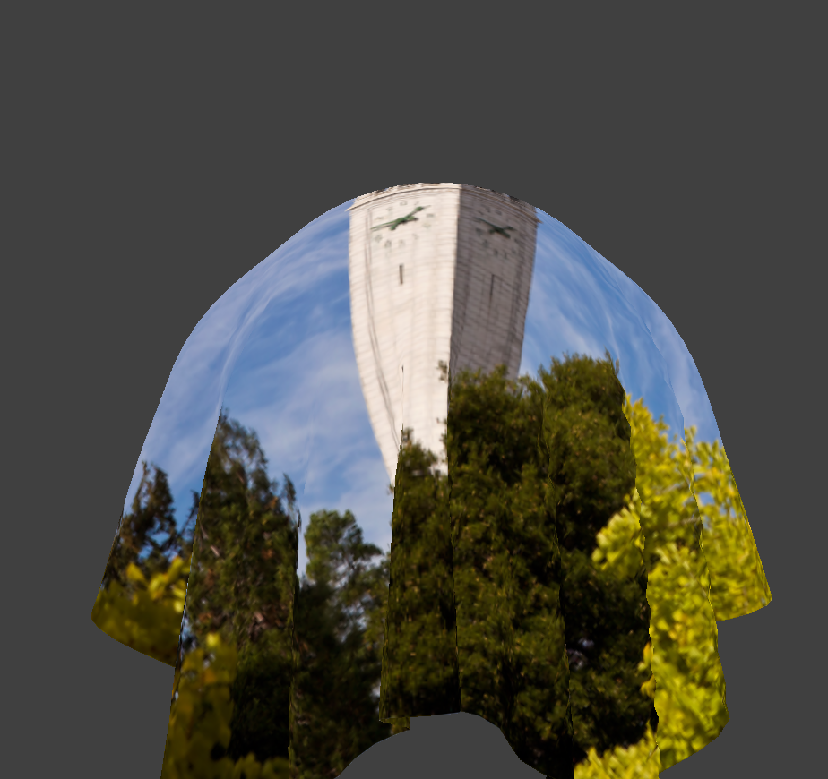

CS184/284A Spring 2025 Homework 4 Write-Up
Link to webpage: https://cal-cs184-student.github.io/hw-webpages-jiangpf2022/
Link to GitHub repository: https://github.com/cal-cs184-student/sp25-hw4-honorofkings

Overview
Give a high-level overview of what you implemented in this homework. Think about what you've built as a whole. Share your thoughts on what interesting things you've learned from completing the homework.Part 1: Masses and springs
Take some screenshots of scene/pinned2.json from a viewing angle where you can clearly see the cloth wireframe to show the structure of your point masses and springs.
|
|
|
|
Show us what the wireframe looks like (1) without any shearing constraints, (2) with only shearing constraints, and (3) with all constraints.
|
|
|
|
Part 2: Simulation via numerical integration
Experiment with some of the parameters in the simulation. To do so, pause the simulation at the start with P, modify the values of interest, and then resume by pressing P again. You can also restart the simulation at any time from the cloth’s starting position by pressing R.
Describe the effects of changing the spring constant ks; how does the cloth behave from start to rest with a very low ks? A high ks?
When the spring constant \( k_s \) is very low, the cloth behaves extremely loosely. The springs have weaker restoring forces, causing the cloth to sag significantly, taking a longer time to reach equilibrium. The final resting state shows substantial deformation, folds, and wrinkles. Conversely, with a very high \( k_s \), the cloth acts stiffly and rigidly. It quickly reaches its resting state with minimal deformation, maintaining a near-flat shape and fewer noticeable folds.
|
|
|
|
What about for density?
Increasing density makes each point mass heavier, thus enhancing the gravitational pull on the cloth. High density causes the cloth to drop faster and further down, forming more pronounced folds. In contrast, low density makes the cloth lighter, resulting in slower falling and subtle, less defined folds in the resting position.
|
|
|
|
What about for damping?
With very low damping, the cloth exhibits noticeable oscillations and takes longer to settle into a stable resting state, showing continuous bouncing motions. With increased damping, the oscillations quickly diminish, and the cloth smoothly but slowly transitions to its resting state with minimal vibration.
|
|
|
|
Show us a screenshot of your shaded cloth from scene/pinned4.json in its final resting state! If you choose to use different parameters than the default ones, please list them.
|
|
Part 3: Handling collisions with other objects
Describe your implementation of handling collisions with spheres and planes.
My implementation for sphere collisions checks if a point mass is inside the sphere by comparing the
distance between the point mass's current position and the sphere's center with the sphere's radius. If the
point mass penetrates the sphere, I calculate the tangent point on the sphere's surface by normalizing the
direction vector from the sphere’s center to the point mass and scaling it to the sphere’s radius. I then
apply a correction to position the point mass just outside the sphere's surface, scaled by
(1 - friction) to simulate frictional effects.
For plane collisions, I detect if a point mass crosses the plane during the current timestep by checking the
sign of distances from its current and previous positions to the plane. If crossing occurs, I calculate the
tangent intersection point on the plane and then slightly offset it by a small constant
SURFACE_OFFSET to prevent clipping. Finally, I correct the position similarly, scaling the
correction vector by friction.
Show us screenshots of your shaded cloth from scene/sphere.json in its final resting state on the sphere using the default ks = 5000 as well as with ks = 500 and ks = 50000. Describe the differences in the results.
|
|
|
|
With a low spring constant (ks = 500), the cloth drapes loosely over the sphere, creating deep
folds and a smooth, flowing appearance. At the default value (ks = 5000), the cloth drapes
realistically, maintaining moderate stiffness and folds that settle naturally around the sphere. With a very
high spring constant (ks = 50000), the cloth is extremely stiff, forming fewer and shallower
wrinkles and maintaining a nearly flat surface with minimal deformation around the sphere.
Show us a screenshot of your shaded cloth lying peacefully at rest on the plane. If you haven’t by now, feel free to express your colorful creativity with the cloth! (You will need to complete the shaders portion first to show custom colors.)
|
|
Part 4: Handling self-collisions
Describe your implementation of handling self-collisions.
My implementation uses spatial hashing to efficiently handle cloth self-collisions. First, I partition the
simulation space into small 3D boxes and hash the position of each point mass into a unique key that
identifies its box. Then, I populate a hash map with point masses indexed by their box keys. During
collision checks, for each point mass, I only consider other point masses within the same hashed box. If two
point masses are within 2 × thickness distance, a correction vector is computed and applied to
separate them, averaged over all nearby collisions and scaled down by simulation_steps to avoid
large position jumps.
Show us at least 3 screenshots that document how your cloth falls and folds on itself, starting with an early, initial self-collision and ending with the cloth at a more restful state (even if it is still slightly bouncy on the ground).

|
|
|
Vary the density as well as ks and describe with words and screenshots how they affect the behavior of the cloth as it falls on itself.
Density Variation:
Increasing density makes the cloth heavier, leading to faster falls and more noticeable self-collisions, resulting in deep folds and pronounced overlaps. Lowering density slows down the fall and results in gentler, softer folds as the cloth settles more delicately.
|
|
|
|
Spring Constant (ks) Variation:
With a low spring constant (ks), the cloth becomes soft and collapses easily upon itself,
forming deep, fluid folds. With the default value, the cloth folds realistically with moderate resistance.
With a very high ks, the cloth becomes stiff, resisting significant deformation, leading to
fewer, shallower folds and a more rigid appearance even when self-colliding.
|
|
|
|
Part 5: Shaders
Explain in your own words what is a shader program and how vertex and fragment shaders work together to create lighting and material effects.
A shader program is specialized GPU-based code designed to process graphical data and determine how 3D scenes appear visually. Shaders primarily consist of two components:
- Vertex Shader: Transforms vertices from object-space to screen-space coordinates, handling attributes such as positions, normals, and texture coordinates. These computed values are passed as varying inputs to the fragment shader.
- Fragment Shader: Determines the color of individual pixels based on interpolated values from the vertex shader, calculating lighting, texture, reflections, and material effects to produce realistic rendering.
Together, these shaders create visually appealing and realistic graphics by computing geometry transformations, lighting equations, and applying material properties.
Explain the Blinn-Phong shading model in your own words. Show screenshots outputting ambient, diffuse, specular components, and the complete model.
The Blinn-Phong shading model calculates lighting on surfaces as the combination of three distinct components: ambient, diffuse, and specular lighting.
The mathematical expression for Blinn-Phong shading is given by:
- \( k_a I_a \): Ambient lighting—simulates indirect environmental illumination.
- \( k_d (I/r^2)\max(0, \mathbf{n}\cdot\mathbf{l}) \): Diffuse lighting—depends on angle between surface normal \( \mathbf{n} \) and light direction \( \mathbf{l} \).
- \( k_s (I/r^2)\max(0, \mathbf{n}\cdot\mathbf{h})^p \): Specular lighting—depends on angle between normal \( \mathbf{n} \) and half-vector \( \mathbf{h} \), producing highlights. The exponent \( p \) controls highlight sharpness.
|
|
|
|
|

|
Show a screenshot of your texture mapping shader using your own custom texture.
| 
|
|
Show screenshots of bump mapping on cloth and sphere, displacement mapping on sphere using the same texture (not default). Compare approaches and how mesh coarseness affects them.
Bump Mapping simulates surface detail by altering the surface normals:
Displacement Mapping physically displaces vertex positions:
Displacement mapping provides true geometric detail, requiring denser meshes for accuracy, whereas bump mapping efficiently simulates detail without altering geometry.
|
|
|
|
|
|
|
Higher mesh resolution significantly enhances displacement mapping realism compared to bump mapping, particularly visible in curved geometry like spheres.
Show a screenshot of your mirror shader on the cloth and on the sphere.
The mirror shader reflects the environment using the reflection vector:
|
|
|
Explain what you did in your custom shader, if you made one.
In my custom shader, I integrated multiple effects: bump mapping, diffuse/specular texturing, detailed texture layering, and environment reflections with a Fresnel blend:
This combination produces complex, realistic visuals that smoothly transition from surface detail to reflective highlights, resulting in an engaging and detailed final rendering.
|
|
|
Extra Credit: Wind Simulation
For the extra credit portion, I implemented a spatially varying wind force to enhance realism in the cloth simulation. Unlike a uniform force (such as gravity), wind varies across space, adding natural fluctuations and complexity to cloth motion.
The implemented wind model applies a sinusoidally varying wind force dependent on the position of each point mass. Specifically, the wind force applied to a point mass at position \( \mathbf{x} \) is computed using:
where:
- \( A \) is the wind amplitude controlling the maximum strength.
- \( f \) is the spatial frequency of wind variations.
- \( \phi_x, \phi_y \) are phase offsets to create a non-uniform spatial distribution.
- \( \mathbf{d} \) is the main wind direction vector.
This model allows the cloth to realistically billow and ripple in response to the wind force rather than moving uniformly, adding considerable realism compared to the original simulation.
|
|
|
As shown in the screenshots, the original cloth simulation on the left hangs statically under gravity, while the right screenshot depicts the cloth dynamically responding to spatially varying wind. Notice how the cloth exhibits natural wave-like patterns and folds, greatly enhancing visual realism and engagement.